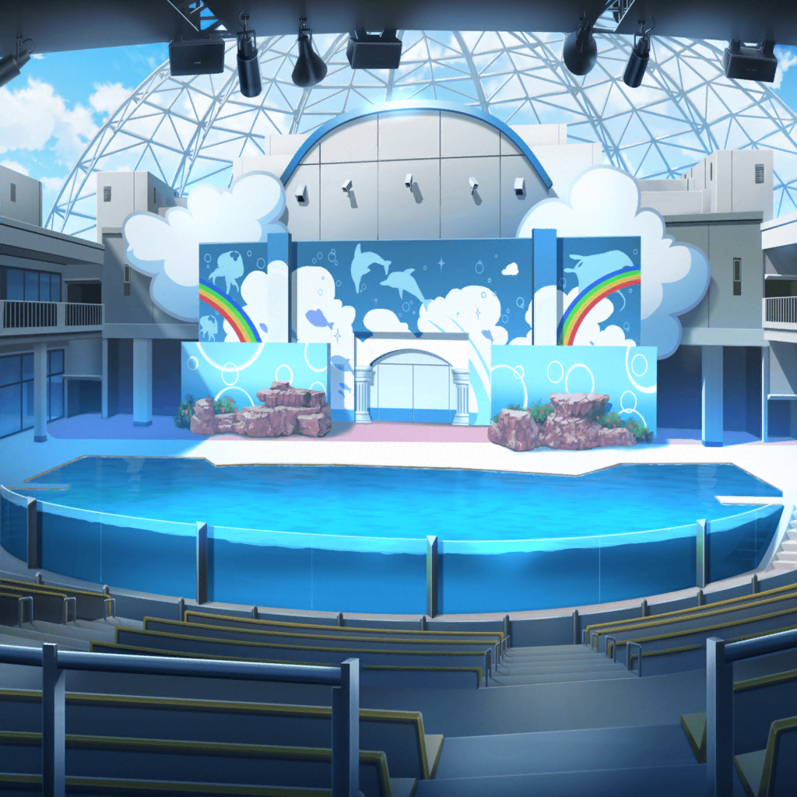

井ノ島
ひまり
パンケーキは美味しかったし、
眺めは最高だったし、満足満足～。
寒いのさえなければ完璧だったね～♪
巴
んで、次はどこ行くんだ？
この辺でひまりがチェックしそうな場所だと……
水族館か？
ひまり
わっ！ 正解！
さっすが巴、わかってるね～
つぐみ
わあ……！ 水族館！
私も行きたいと思ってたんだ
蘭
それじゃ、水族館に決定だね。
とりあえず早く暖かいところに行こ。
モカもそれでいいよね？
モカ
ん～……？ ん〜
巴
どうした、モカ？
さっきからキョロキョロしてるけど
モカ
いや～……
美味しそうなお店がいっぱいあるから、
ついつい目が行っちゃうんだよね
蘭
モカ、さっきまでパンケーキ食べてたのに
よくまだ食べられるね
モカ
ふふーん。あたしの胃は宇宙みたいなもんですからね〜
つぐみ
しらすパン……串おかき……
どういう物か想像つかないけど、美味しそうな響きだね。
このあたりの名物なのかな？
モカ
あ。
あたしは、あれかな？
あそこにある、たこせんってやつ
巴
ちゃんと食べ歩きしやすいようになってるんだな。
水族館まで、それ食べながら歩くのもいいんじゃないか？
モカ
やったー。
トモちんのお言葉に甘えてそうしよー
ひまり
けど、見てよあのお店の行列……
つぐみ
本当だ……
美味しそうだけど……あの列に並んでたら
水族館に行く時間が遅くなっちゃうかもね……
蘭
ちょっとこれ以上寒いのは勘弁かな
モカ
ええ～、あたしのたこせんが……
たこせん……たこせん……
蘭
ほらモカ。
寒いから早く行くよ
モカ
たこせん〜……

水族館 館内
ひまり
わあっ！ クラゲの水槽すっごくキレイ！
写真撮っとこーっと♪
あっ、みてみて！ モノクロで撮るとすっごい神秘的～！
巴
はは……
ひまりは、ここでもまた写真か……
モカ
お……ねえねえ、あっちのほうに
カメとかがいるみたいだよ〜。行ってみようよー
蘭
うん、行こう
巴
……っと。これで館内は一通り見終わった感じだな。
で、これからどうする？ もう、出るか？
つぐみ
あの、さ……
時間あるなら、イルカショー見ていかない？
あとちょっとでちょうど始まるみたいだし
蘭
そういえば……
つぐみって昔からイルカショー好きだったよね？
ひまり
確かに！ せっかくだし、見に行こうよ！
つぐみ
ありがとう……っ！
会場はこっちだよ！ みんな、行こうっ！
モカ
あ、つぐ〜……行っちゃった。
うちらも行こー

水族館 イルカショー会場
つぐみ
あっ！ １番前の席がまだ空いてるよっ！
みんな、１番前……いいかな？
ひまり
もっちろん！
特等席で見ちゃお♪
巴
お！ はじまった！ やっぱり最前列は
この時点でもう迫力が違うな〜。
前の席にして正解だったな、つぐ！
つぐみ
…………
蘭
ていうか、つぐみ……
すでに目がイルカに釘付けになってるし……
つぐみ
え、えへへ……イルカショーってなかなか見る機会ないから、
目に焼きつけておこうって思って
ひまり
そういえば、つぐってどうしてそんなに
イルカショーが好きなの？
つぐみ
単純にイルカがかわいくて好きっていうのもあるけど……
つぐみ
イルカとトレーナーさんが
信頼し合ってる感じが、すごく素敵だなって思って！
……わっ！ 今のジャンプ、見た！？
蘭
すごいね、今の……！
確かに信頼関係がないと、あの動きってできないと思う
ひまり
わあっ！ つぐ！ 上から輪っかが降りてきたよ。
もしかして……あれをくぐるのかなっ！？
巴
結構な高さあるぞ……
本当にあそこまで届くか？
つぐみ
な、なんか、こっちまでドキドキするね……っ！
ねえ、見て！！
イルカが助走つけて泳ぎ始めたよっ！
ひまり
わーっ！
すっごいスピードっ！！
つぐみ
トレーナーさんが手を上げたよっ！
頑張って～～っ！
ひまり
わ～～っ！
シャッターチャーンスっ！！！
蘭
…………ねぇ？
……どうすんの、これ？
全身、ずぶ濡れなんだけど……
巴
やっぱり最前列は迫力が違うな〜！！
……あ、あはは……っくしょい！
ひまり
せっかく館内で温まったのに……
モカ
……寒い